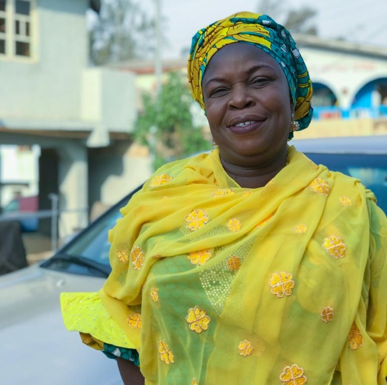

Mrs Kazeem F.O
Mrs Kazeem F.O is Nigerian mother and a civil servant, over the past two and one-half decades, she has worked under the government as a teacher ranging from primary schools to secondary schools. She earned her BSc in Guidance and counseling in 1988 from Olabisi Onabanjo University, Ogun state.
Mrs Kazeem was born in Ogun state, she got her primary and secondary education in Ogun state also attended teachers college and college of education in Ogun state. She is a mother of 4 including 3 boys and a twin.
Mrs Kazeem is a level 15 officer and currently an assistant head teacher in Baptist primary school, Kosofe Lagos and has since then carried out her duties duly like always.
Below are pictures she took on her most recent birthday:
Contact Information:
Tel: 08093375297
E-Mail: Princekennykay@gmail.com